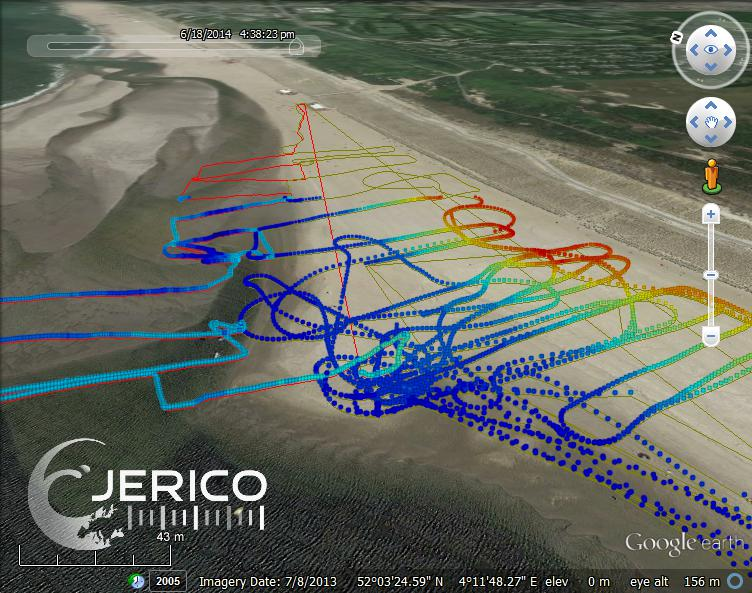
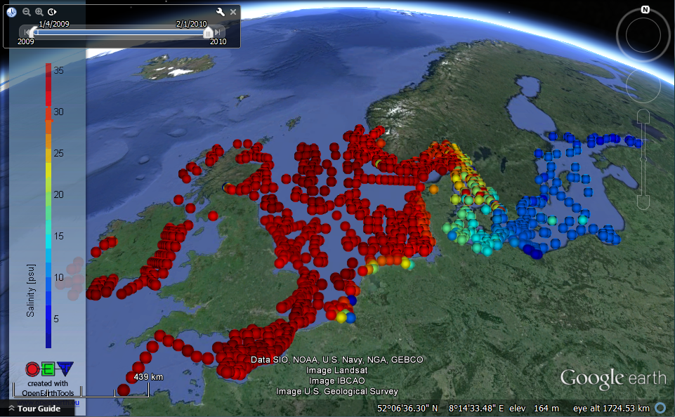
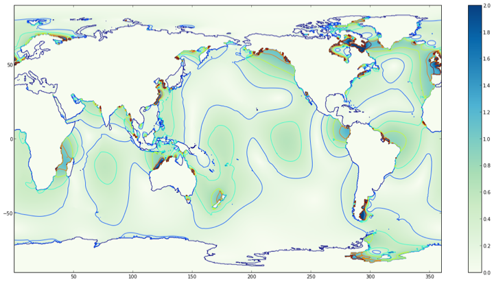
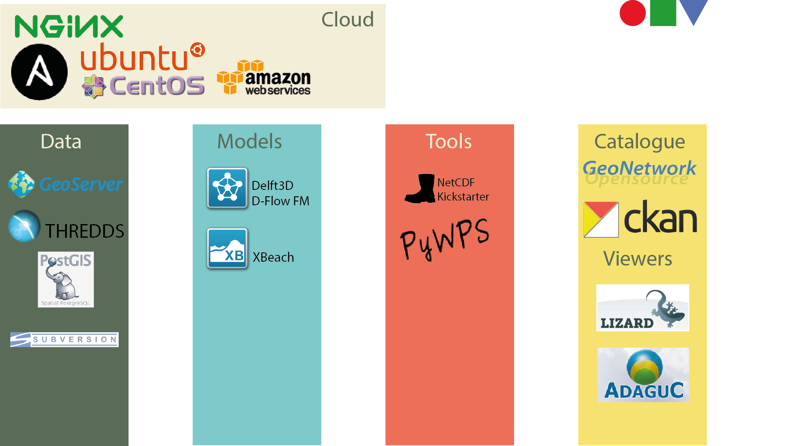
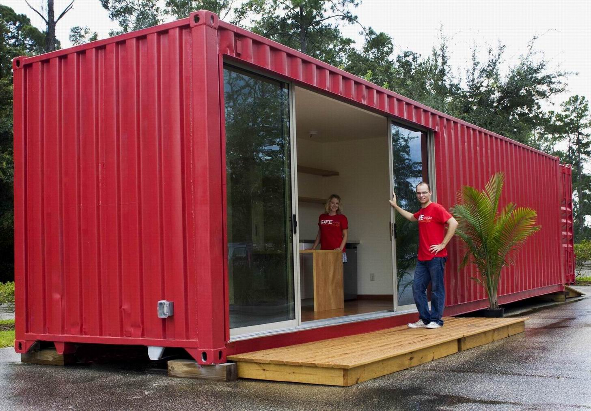

OpenEarth
Fedor Baart
fedor.baart@deltares.nl
Data


Models

Model as a Service
Challenge
Setup project environment: 2 weeks
Stack


Partners: Van Oord
Partners: 3TU
Setup project environment: 15 minutes